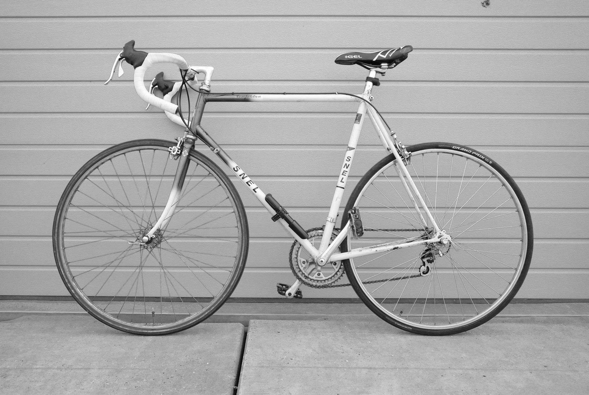

My current daily driver is a 90s Campagnolo road bike, purchased mid-2021.
The frame is Reynolds 531c steel, 2x7 gears, and some nicely mismatched tyres (Continental Grand Prix 24mm on the back, no-name 26mm on the front) which I ~should replace soon~ am perfectly happy with.
It says ‘SNEL’ on the side (which means ‘fast’).